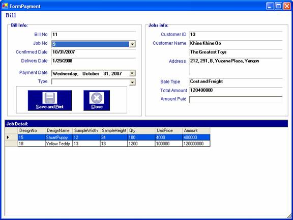
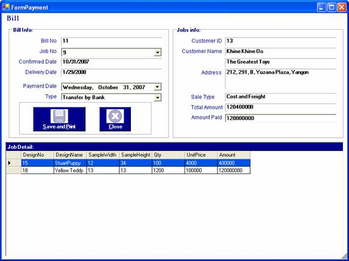
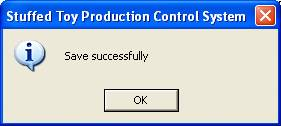
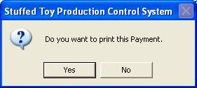
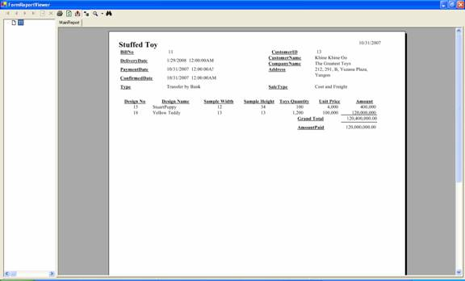

How to process Payment
After you have successfully logged in to the system, you can enter the required data.
To receive the payment from the customer, there should be specific delivery date for the job.
To do the process of payment, firstly, open the "Payment" form from the Process Menu Bar. When it is come out, choose the job no to do payment.

After the job no is chosen, the payment type should be chosen and the amount paid should be entered. To enter the amount paid, you can give discount for the particular customers.

To store information, click "Save and Print "button or "Alt+S". The following message will be appeared.

Moreover, this messge will be appeared to ask for the confirmation of printing the payment. If you want to print the payment, click "Yes" button and if not click "No" button.

If you want to print the payment, click "Yes" button. This report will be appeared to print the payment.

Saving the payment for jobs process can be done as many time as you like.
Finally, to close the payment form, Press "Close" button or "Alt+C".